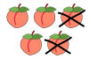

subtraction

Definition: Subtraction (which is signified by the minus sign −) is one of the four arithmetic operations along with addition, multiplication and division. Subtraction is an operation that represents removal of objects from a collection. For example, in the adjacent picture, there are 5 − 2 peaches—meaning 5 peaches with 2 taken away, resulting in a total of 3 peaches. Therefore, the difference of 5 and 2 is 3; that is, 5 − 2 = 3. While primarily associated with natural numbers in arithmetic, subtraction can also represent removing or decreasing physical and abstract quantities using different kinds of objects including negative numbers, fractions, irrational numbers, vectors, decimals, functions, and matrices.
Source: Wikipedia
Wikipedia Page (Something wrong with this association? Let us know.)
Wikidata Page (Something wrong with this association? Let us know.)